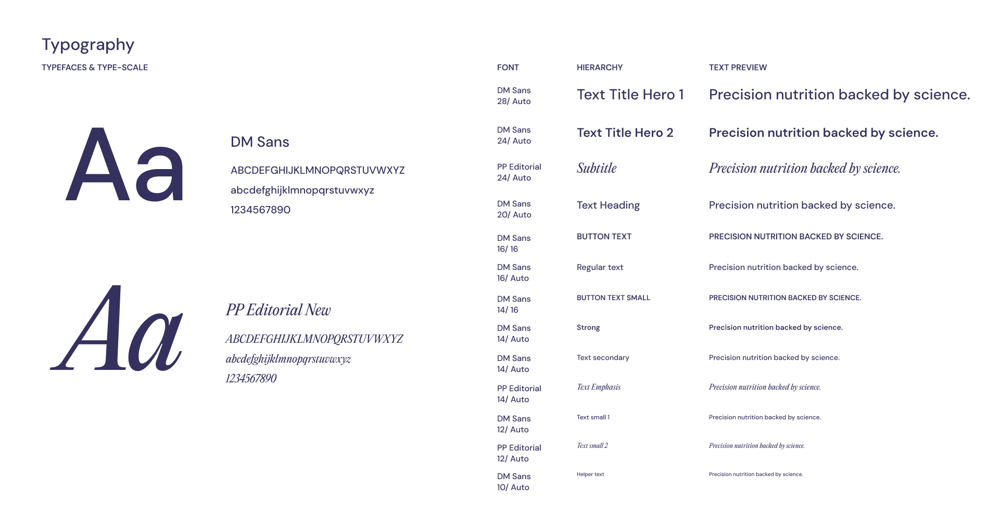
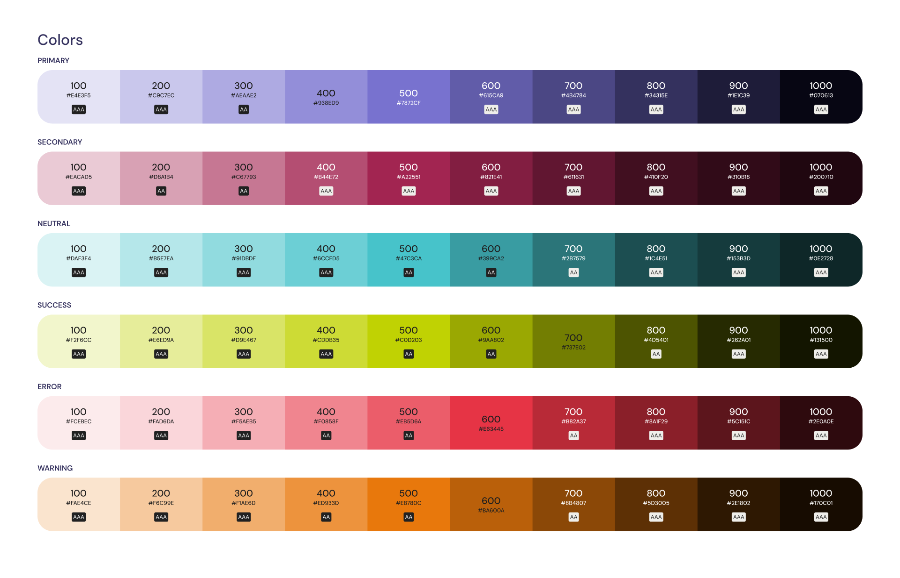
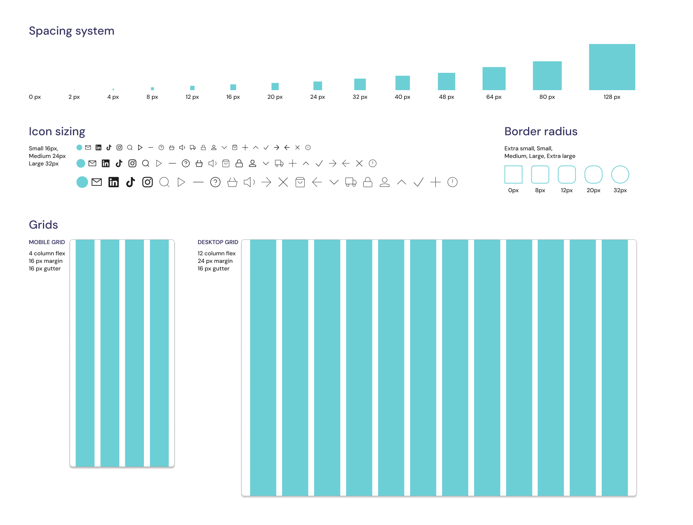
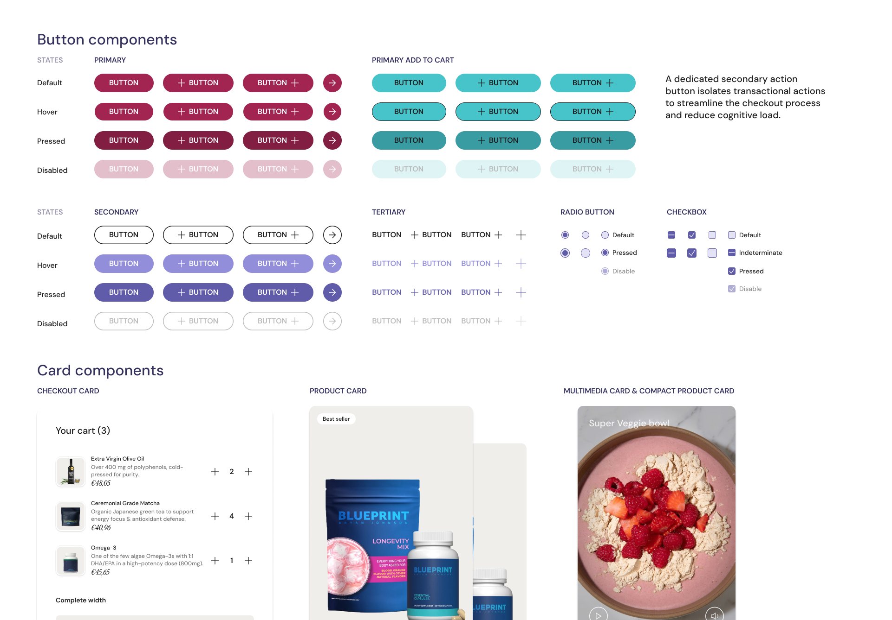
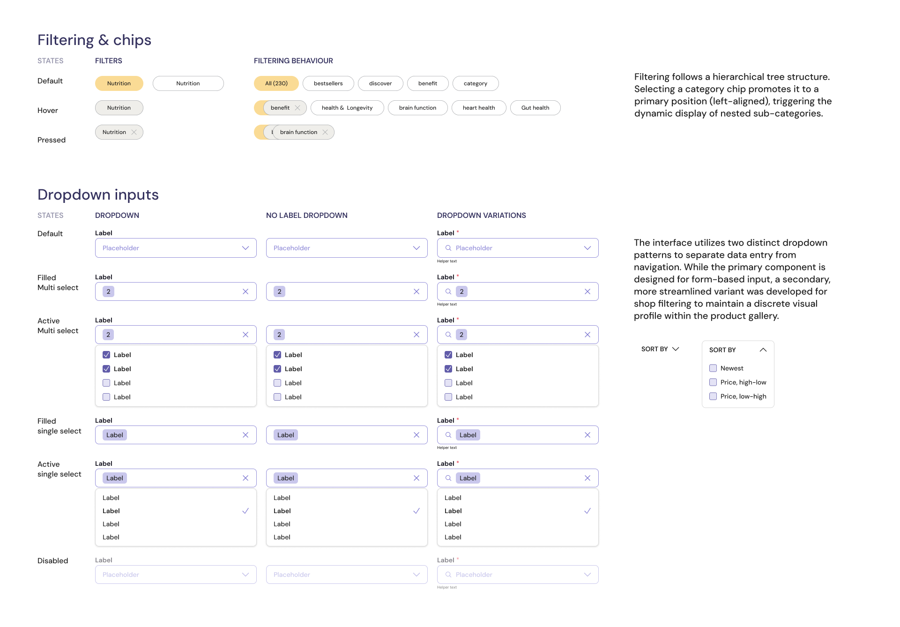
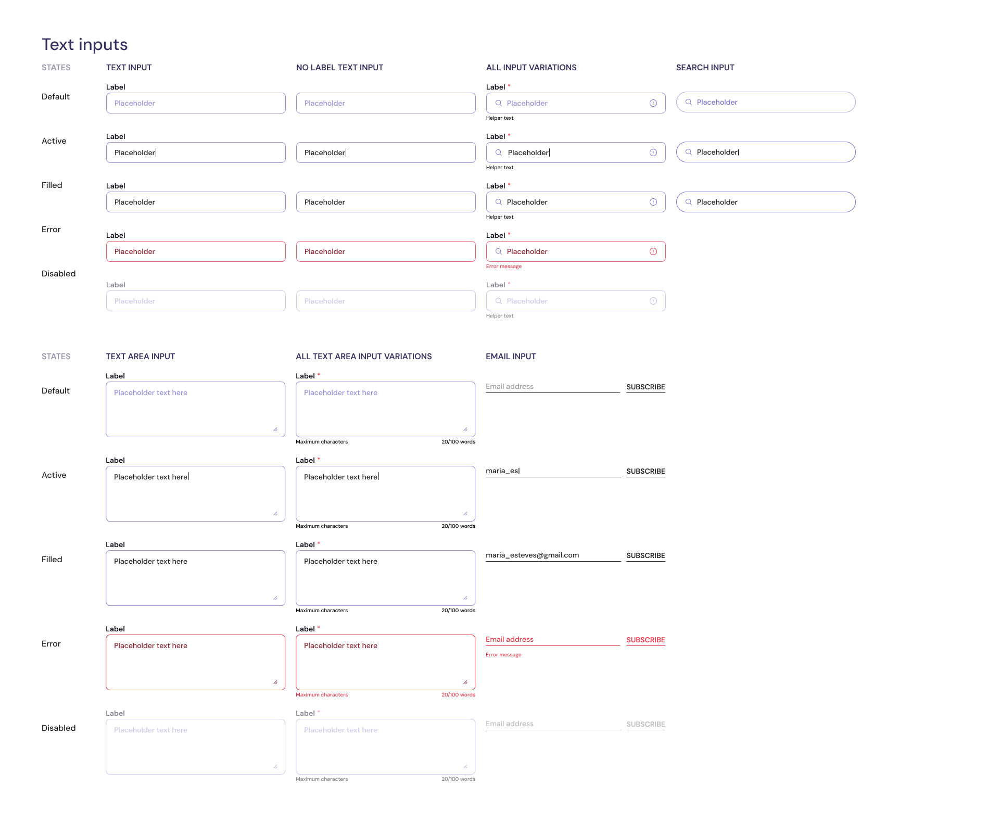

Suprafood — Building a design system from scratch
Design system • Figma variables • Component architecture • Light & dark mode • E-commerce • 2026

Context
Suprafood is a concept e-commerce store for science-backed supplements, designed for the everyday consumer,not the biohacker. Someone who wants to improve their health but gets lost in the noise: too many products, too many claims, too little trust.
Market opportunity
Big market, low trust
The European supplement market is valued at around €40B and growing, but size hasn't brought clarity. Most of the market still runs on vague claims, influencer credibility, and aesthetics that sell before informing.
Research
Key insights
Market research and benchmarking across existing supplement stores, mapping their strengths and weaknesses. Two patterns emerged clearly: stores that are information-heavy and hard to navigate, and stores that are visually polished but opaque about their products.
Neither extreme serves the user who just wants to make a confident, informed purchase.
Information overload
Most supplement stores offer too many products with too many claims. Users don't know where to start.
Style over substance
Influencer-led stores look good but lack transparency. Users can't verify what they're buying or where it comes from.
The gap in the middle
No store combines a clean, user-friendly experience with genuine product transparency. That's the opportunity.
Problem statement & Strategy
Clarity and Trust in Supplement Shopping
Everyday consumers want to buy supplements but lack clear starting points and, more critically, do not know which sources to trust. Suprafood will combine a clean, approachable interface with clear, trustworthy information, reducing friction through intuitive filtering and providing ingredient-level detail so users can make informed decisions without leaving the platform.


Design decisions
Design Thinking
01 Clean, restrained aesthetic
Modern and minimal, close to a luxury brand, without the opacity.
02 Ingredients front and centre
Large imagery paired with clear breakdowns. The science gets the visual hierarchy it deserves.
03 Familiar patterns
No surprises in navigation or purchase flow. Trust comes from familiarity.
04 Recipes and usage suggestions
Users know what they're buying and how to use it, without leaving the platform.
05 System before screens
Type, color tokens, spacing, and variables defined first. Components built on top.
Design System
The design system was built in parallel with the product, tokens, typography, spacing, and components updated as the work evolved rather than locked in upfront.



Components



Final UI
Every screen is built from system components, buttons, inputs, tags, nav, product cards, cart, and checkout, with full light and dark mode support. Any change to the system propagates automatically across the whole product.
Limitations & next steps
Scaling the Product and Brand Across Platforms
The concept is desktop-first, the next step is mobile adaptation to expand reach and test performance across breakpoints. Beyond the product, the focus will shift to social platforms, exploring how the visual identity and transparency-first approach translate into scroll-based content.